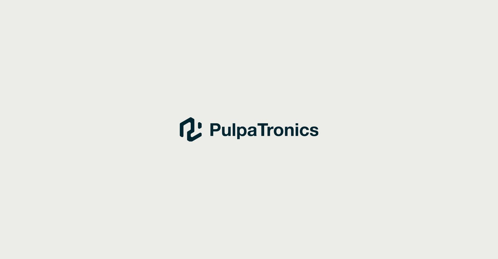
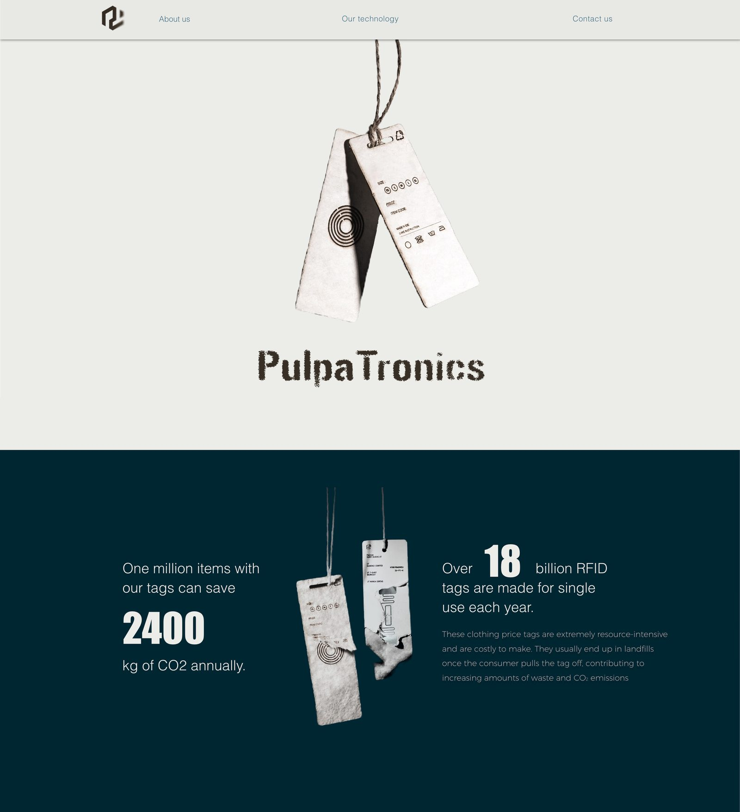
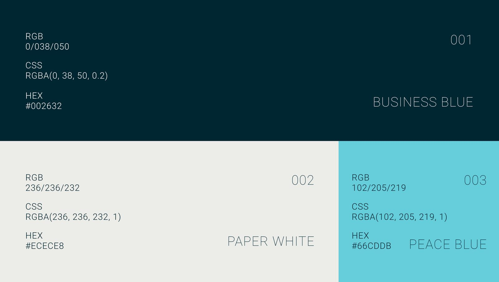
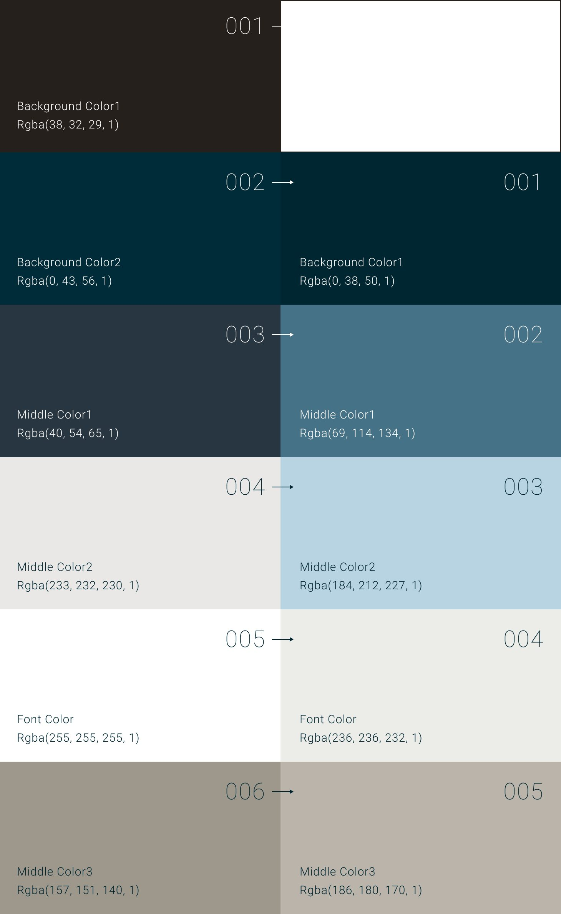
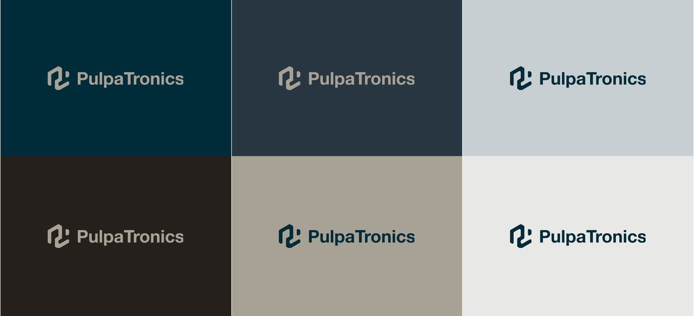
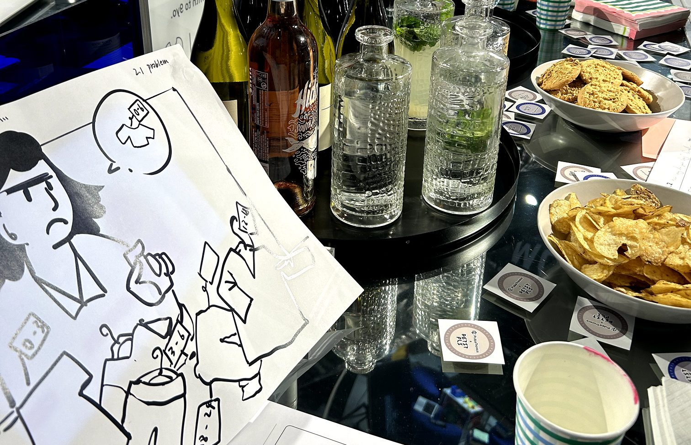

Brand building for a sustainable-tech startup — colour system, branding, promotional materials and workshop visual support.

PulpaTronics is a startup focused on sustainable innovation, specialising in B2B solutions — developing eco-friendly technologies and collaborating with businesses to integrate sustainable practices into their operations. During my internship in London in 2024, I worked mainly on brand building: website maintenance, colour system, branding, promotional materials, customer-workshop visual support, and brand-linkage support with other London startups.

My work started with the colour update and ended with supporting a collaboration webpage for another company. Two parts: colour upgrade, and visual design support.
The old palette felt slightly aged and muted — desaturated, earthy tones. Dark blues, browns and greys lacked vibrancy, and the beige and off-white shades reinforced a worn, faded-paper look. Without a contrasting accent, there was no focal point to draw attention, reducing overall clarity and impact.

The result: deep navy and muted blues maintain trustworthiness, while turquoise adds freshness and innovation — a stronger, more coherent alignment with the company's sustainable, startup-driven identity.


After the colour system update, my remaining internship work focused on supporting design materials: marketing collateral, illustrations for user-experience workshops, business cards, and UI support for brand collaborations.
